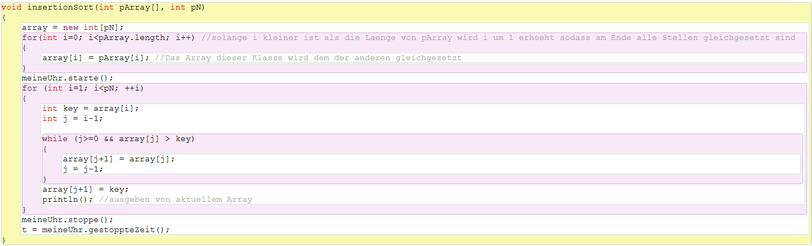
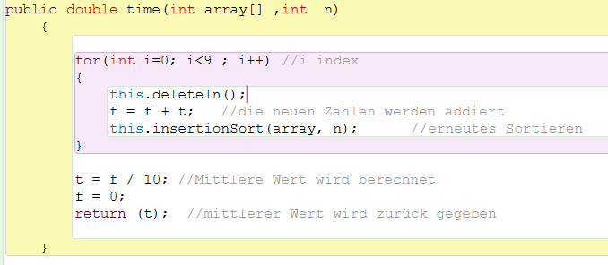

InsertionSort ist ein einfacher Sortieralgorithmus. Der Code ist kurz und übersichtlich und das Prinzip leicht verständich.

Im ersten Teil dieser Methode wird vermittelt zwischen der SuMAnwendung() und InsertionSort(). Hier wird ein "Vermittler Array" gleich dem Original Array gesetzt. So ändert das Programm nichts am Original Array, sodass auf diesen weiterhin zugegriffen werden kann.
Dann wird noch die Stoppuhr gestartet, bevor dann InsertionSort beginnt zu arbeiten:
InsertionSort vergleicht zwei Positionen des Arrays miteinander. Bsw. Position 5 mit 4. Also zuerst immer eine mit der davor liegenden. Wenn die davor liegende größer ist als das Vergleichsobjekt, dann wird das nächste verglichen (in diesem Fall die Position 3). Wenn diese nun auch größer ist, wird wieder die Position davor genommen. Das geschieht, bis das Vergleichsobjekt kleiner ist, als die Position an der man gerade ist oder man mit der 1ten Position des Arrays angekommen ist. Dann wird das Vergleichsobjekt hinter das kleinere gelegt und alle anderen rücken auf.
Das Ganze fängt dann durch eine For-Schleife wieder von vorne an. Also in diesem Beispiel wird nun Position 6 mit der/denen davor verglichen.
Die For-Schleife läuft exakt einmal weniger, als das Array lang ist, dann ist mit insertionSort schon fertig sortiert. Das liegt daran, dass jede Stelle des Arrays nur einmal mit den davor liegenden verglichen wird und bei der 2ten Stelle gestartet wird. Bei einem Array der Länge 10 ist also schon nach 9 Schritten Schluss.

Die Methode der Zeitberechnung wird in der Dokumentation zur Zeitberechnung genauer erklärt.
InsertionSort von Dagh Zeppenfeld